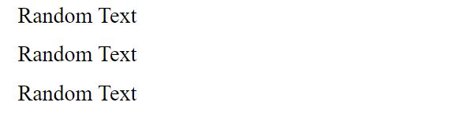
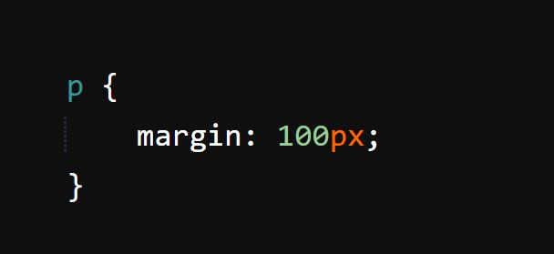
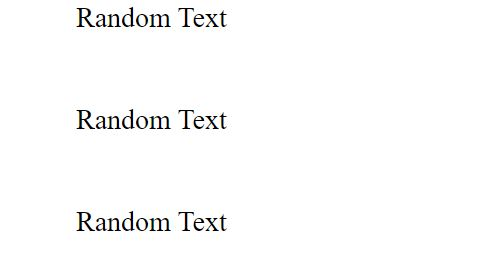
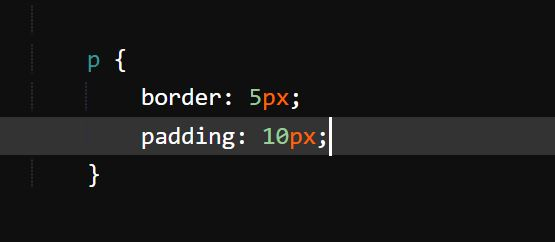

What is a Margin?
Imagine this is you. “You have written out your code and have been trying to get that pesky little image, text or box to just mind its own business and stop being so close to your other elements? What do you do? Well, that is where the margin property comes in.
Look at the following example:
Let's say we have a few paragraph tags with some text in them, and we want to increase or decrease the distance between each of these paragraphs:
To do this we use the p selector (this tells CSS that you want to style all your p or 'paragraph' elements). Under it specify the "margin" property and set it to 100px (as a random value):
As you can see, the distance between the text changed drastically:
Margin controls the space between all your elements. Changing the number of px (pixels) you want between your elements, will increase and decrease this space. If you want to be more specific, you can specify margin-top, margin-right, margin-bottom, and margin-left:
This allows you to adjust the margin for only the space above, to the right, below, or left of your elements. Alternatively, you can do the same by just typing margin and the px values you want in a clockwise fashion:
It goes in this order: top, right, bottom, left. Just like a clock!
What is Padding?
Now, unlike margin, padding does not change the distance between elements. Instead, it changes the distance between elements and their content (what is inside them).
Using the border property will create a border around your content and allow you to see this in action, but I couldn't get it to work fast enough. You can't see it, but padding is affecting the distance between the text and its 'invisible' border:
By increasing or decreasing the padding, we effectively increase and decrease the space between our elements and the border around them. It uses the exact same “clockwise” fashion as the margin property does, so we can specify exactly which side of our elements we want padded.
I hope this was helpful.